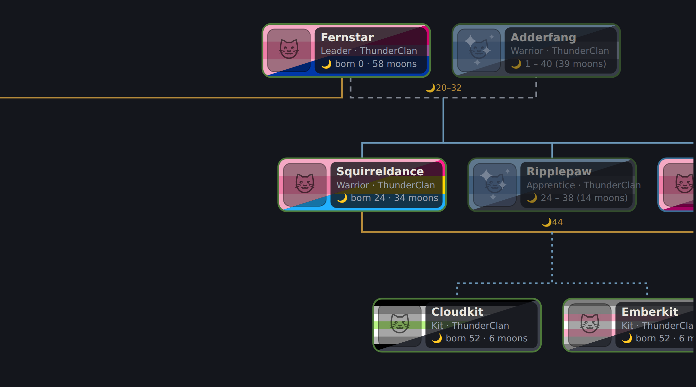
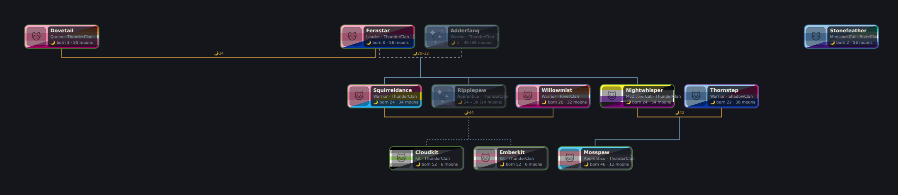
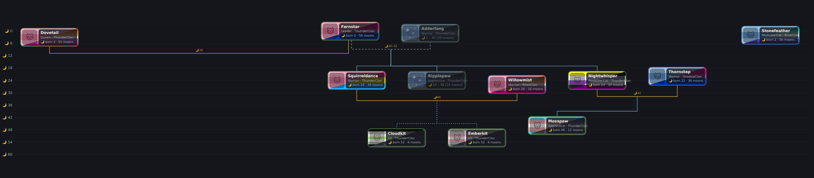
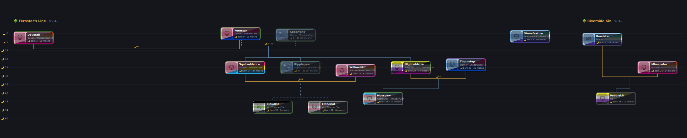
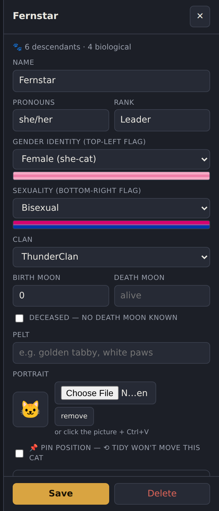
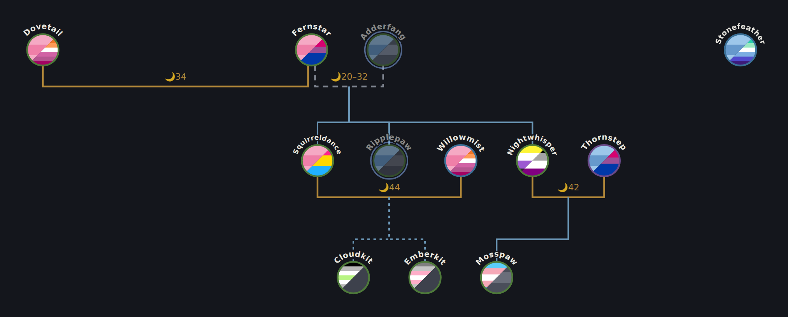

Family trees for
Warrior Cats roleplay.
A free, fan-made family-tree editor for the Warriors RP community. Build your trees cat by cat: identity, moons, relationships, and portraits on a canvas that keeps the lines clean. Everything runs in your browser from a single file, fully offline. No accounts, no telemetry; your cats stay on your machine.
Free · ~491 KB zip · runs in your browser, straight from the file

Everything in one place.
All data lives on your machine, in your browser. Data is saved after every change, data is linked between trees, all trees can be referenced from a single view, and there is no online component.
Local-first, single file
The whole app is one index.html. Double-click it and you're editing. Your data is stored by your browser on your computer and goes nowhere else unless you choose to share it.
Backups you control
Download the whole database as one portable SQLite file. Projects and trees can be exported and shared in JSON format.
Seamless updates
New versions upgrade old databases in place. Rolling back a version never touches your data either, as it lives in the browser and your exported files, not the application.
Features
WC Lineage was developed to keep big projects organized and express every character's story, all while remaining intuitive and quick to use. The screenshots are the real app rendering its built-in sample project. Click any of them to enlarge.
Organization & Time Tracking
Projects group trees and define clans (editable canon-inspired presets included). Ages count in moons from a project-wide “current moon”, with all relationships correlating to spans if the data is present.

Classic generations view
Cats lay out in generation rows, families consolidate side by side as tidy blocks, and relationship lines route around tiles, never through them. Mate, ex, widowed and unknown-union lines each have their own style, and kits connect to their parents' actual mate line.
Drag any cat or line to fine-tune; ⟲ Tidy resets everything except the cats you've 📌 pinned.

Moons timeline 🌙
Flip one toggle and the whole tree rearranges by birth moon against a moon scale: who was born when, who outlived whom, which relationships overlapped. Mate links are labeled with the moons they began and ended.

Every tree, one view
The All trees overview lays a project's trees out side by side. In timeline mode they share one moon scale, so the same moon lines up across the whole project. Pick exactly which trees to compare with 🗂 Pick trees…
Same character in multiple trees? 🔗 links the copies and profiles sync all-ways. And when two trees need to actually connect, ⤵ merge moves one, and optionally their kin, across and consolidates the duplicates.
Identities & Expanded Backstory
Every cat gets to be a whole character, not just a name in a box.

Profiles that let you tell the whole story
Identity, rank, clan, birth and death moons, pelt, personality, history, skills, cause of death, afterlife, player notes, and a portrait you can paste straight from a screenshot (Ctrl+V).
Profiles autosave when you click away, and you can hover any field for plain-language help.
Ease of Use
Quality-of-life shipped from real beta feedback: the small things that add up.

Compact mode ◉
Collapse bubbles to small split-flag points with name labels and see the entire structure at a glance. Ideal for huge trees, and everything (badges, links, collapse handles) still works.
Download the beta.
WC Lineage is in active beta. Features land weekly, driven by tester feedback.
WC Lineage v0.18
index.html· the whole app, one filewc-echo-import.html· Family Echo CSV converterREADME· full feature guide and data notesTHIRD-PARTY-LICENSES· notices for the embedded engine
Running it takes three steps, and one is “unzip”.
No install, no build, no server, no sign-up.
Unzip
Put the folder anywhere:
Documents, a USB stick, your RP folder. Keep index.html and its
companions together.
Double-click index.html
It opens in your browser and runs fully offline from the very first open. Everything, including the SQLite engine, is built into the file. No internet, no install, no account.
Press Sample
A three-generation demo project loads so you can try every feature before touching your own cats.
Bring trees in, send trees out.
Trees are made to travel: share them with other players, post them to your RP threads, and bring your existing Family Echo work along, fully offline.
Coming from Family Echo? Bring everything.
The download includes a companion converter that turns Family Echo CSV exports into a ready-to-import WC Lineage project.
Export your CSVs
In Family Echo, export each family as CSV. Grab them all; the converter takes the whole set at once.
Drop them on wc-echo-import.html
One tree per file. Same-named cats across files are matched into cross-tree 🔗 links (you review every match), clan-named placeholders become proper unknown-parent cats, and the deceased flag carries over.
Import the JSON
In WC Lineage: ⇄ Share → Import project JSON. Your trees appear as a new project; existing data is untouched. Family Echo exports carry no dates, so add moons whenever you're ready.
Sharing your trees
Three ways to get a tree out of your browser and in front of other people.
Project JSON
One project, with your creator credit. Importing adds it beside existing projects. This is the format for sharing trees between players.
PNG / SVG
Crisp whole-tree images with the theme background and credit line baked in, sized automatically to stay inside browser limits.
Creator credit
A local creator profile rides your exports, so shared trees carry your name. No account needed.